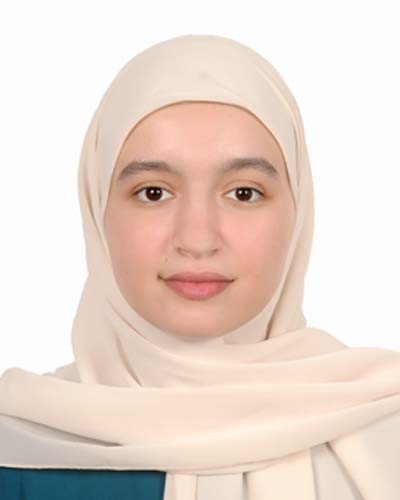

CYBERSECURITY PORTFOLIO
Master's Student in Computer Engineering and Systems Security
Mohammed V University · Rabat, Morocco

MON PARCOURS
Étudiante en deuxième année de Master Ingénierie Informatique et Sécurité des Systèmes (2I2S) à l'Université Mohammed V de Rabat, je m'intéresse particulièrement à la cybersécurité, notamment à la supervision de la sécurité, à la détection des incidents et à la sécurité des systèmes et des réseaux.
À travers ma formation et mes projets pratiques, j'ai développé des compétences en administration Linux, en analyse des journaux d'événements Windows et en utilisation de Wazuh SIEM pour la collecte, la surveillance et la détection des activités suspectes.
Je souhaite approfondir mes compétences techniques et acquérir une expérience professionnelle dans le domaine de la cybersécurité à travers un stage.